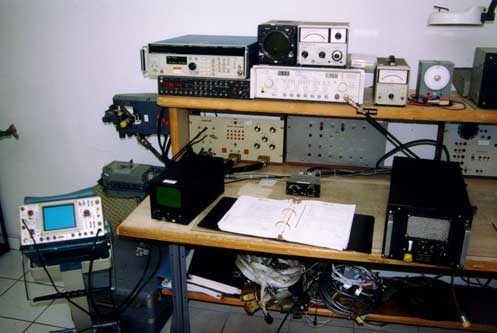
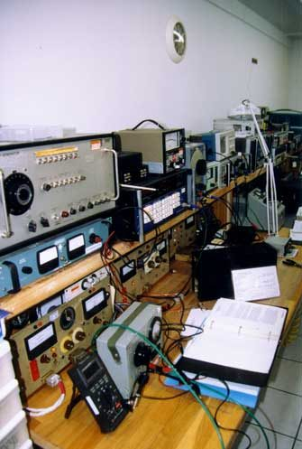
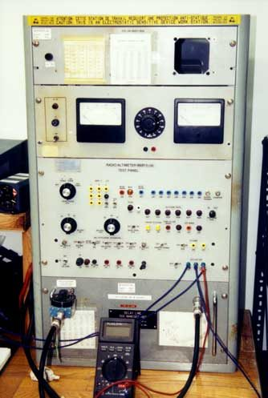
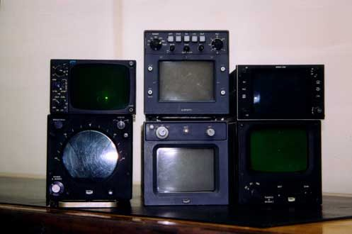
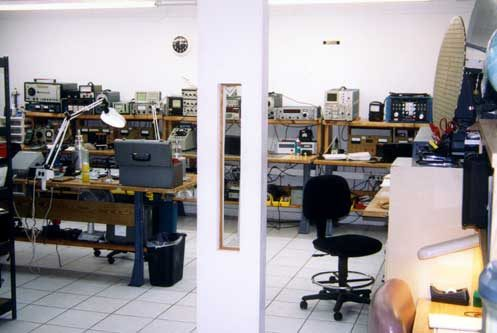

Reparación de aviónica e instrumentos de aeronaves
Somos una estación reparadora certificada por la FAA / EASA que ofrece capacidades de reparación general (overhaul) y reparación.
Habilitaciones de la FAA para equipos de comunicaciones, navegación y radar, y habilitaciones limitadas para accesorios.
O llame al 1-305-392-6291 · info@confidenceaviation.com
Qué reparamos
Confidence Aviation está autorizada para las siguientes habilitaciones y limitaciones:
Equipos de comunicaciones
Habilitación FAA Radio Class 1 (ilimitada)
Equipos de navegación
Habilitación FAA Radio Class 2 (ilimitada)
Equipos de radar
Habilitación FAA Radio Class 3 (ilimitada)
Accesorios
Habilitaciones limitadas: muchos accesorios, incluidas válvulas neumáticas y luces
Aviónica e instrumentos
Reparaciones como alternativa al OEM para paneles de instrumentos y válvulas de aeronaves Boeing, Bendix/King, Honeywell, Sperry y Collins
Llame a nuestras oficinas al 1-305-392-6291 para obtener una lista completa.
Por qué Confidence Aviation
Estación reparadora FAA No. V9DR072Y
Air Agency Certificate emitido el 15 de diciembre de 1998, con las habilitaciones RADIO y LIMITED ACCESSORY.
Ver el certificadoReferencia de aprobación EASA.145.5139
Certificado de aprobación de la Agencia Europea de Seguridad Aérea, fecha de emisión 19 de octubre de 2004.
Ver el documentoMás de 55 años de experiencia
Nuestros técnicos tienen más de 55 años de experiencia en servicios de aviación.
Leer el mensaje de nuestros presidentesEquipos de prueba documentados
En el recorrido del taller: bancos y equipos de prueba de radar, NAV/COMM, DME/transpondedor y altímetros.
Ver el tallerMiami, Florida
7605 N.W. 50th Street, Miami, FL 33166, con indicaciones desde los aeropuertos MIA, FLL y FXE.
Cómo llegar
Nuestro taller

Taller de aviación: banco de radar 1 
Taller de aviación: banco NAV/COMM 
Taller de aviación: equipo de prueba de altímetros 
Taller de aviación: indicadores de radar
Certificados

Air Agency Certificate
Certificado de Agencia Aérea (FAA)
No. V9DR072Y
Fecha de emisión: 15 de diciembre de 1998

European Aviation Safety Agency Approval Certificate
Certificado de aprobación de la Agencia Europea de Seguridad Aérea
EASA.145.5139
Fecha de emisión: 19 de octubre de 2004

Operations Specifications
Especificaciones de operación (FAA)
A003
Vigencia de la aprobación: 22/01/2003 (enmienda 2)


Las fechas son las que figuran en cada documento. Contáctenos para conocer el estado actual de la certificación.
Bienvenidos
Confidence Aviation le da la bienvenida a su sitio web.
Estación reparadora FAA No. V9DR072Y
Contamos con un personal altamente calificado y técnicos certificados con más de 55 años de experiencia.
Nuestra meta es la satisfacción del cliente y el compromiso con la calidad y la confiabilidad.
Esperamos hacer negocios con usted.
Llámenos HOY al 305-392-6291.

Solicitar cotización de reparación
Incluya el fabricante, el modelo, el número de parte, el número de serie, la cantidad y el trabajo solicitado.
7605 N.W. 50th Street
Miami, FL 33166
info@confidenceaviation.com